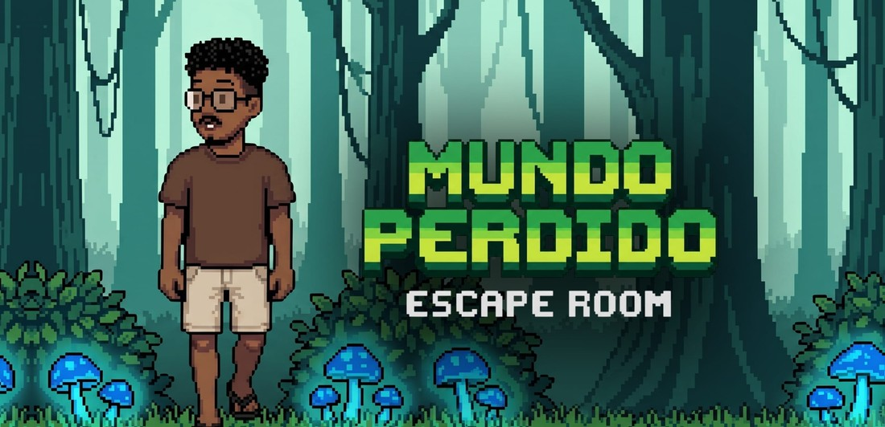
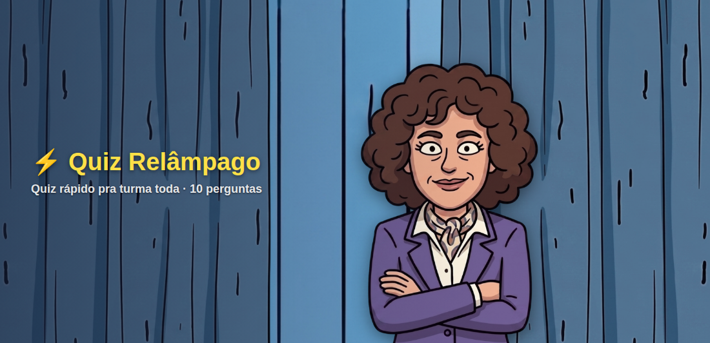

01 · A realidade da sala de aula
Isso soa familiar?
Você sai da escola e o trabalho vem junto. Janta pensando na aula de amanhã,
deita planejando a próxima semana, acorda já devendo. O corpo sai da sala, a cabeça não.
A mente não desligaDormir pensando no conteúdo da próxima aula. Acordar de madrugada lembrando do que faltou.
O trabalho vai juntoVocê fecha a porta da escola, mas o planejamento senta no sofá com você.
A pilha que nunca zeraNotas, chamada, provas, relatórios. Some um domingo inteiro e a pilha continua ali.
Criar do zero, todo diaSeis turmas, seis planejamentos. Inspiração não aparece por decreto às 22h.
E a vontade de sairBons professores desistindo da sala nos primeiros meses, cansados antes mesmo de começar. Não é falta de vocação: é falta de ferramenta.
Não é falta de vontade. É que ninguém dá conta de fazer tudo sozinho.
02 · A virada
Você escreve o tema.
Ele monta o resto.
Digite o tema antes de sair da escola. O Corujão estrutura e monta enquanto você vai
para casa, e avisa quando termina. Quando você senta para jantar, a aula já existe.
Professor
Fotossíntese, 8º ano. Algo que engaje a turma.
Corujão
✓Plano completo com as habilidades da BNCC conferidas uma a uma
✓Atividade impressa, pronta para distribuir na aula seguinte
✓Slides com imagens e design automático, exportáveis em PowerPoint
✓Quiz Relâmpago para fechar a semana com a turma no projetor
Pronto antes de você chegar em casa
03 · Por que confiar no que sai
Toda IA diz que é “alinhada à BNCC”.
Aqui a habilidade é conferida.
1
Identifica a turma
Pelo nome e nível, descobre etapa, ano e disciplina. Entende 9º B, 3º A, 2ª série, Maternal II.
2
Injeta as habilidades reais
Seleciona as aprendizagens oficiais mais próximas do tema, em vez de deixar a IA adivinhar.
3
Confere e reescreve
Compara cada código com o dataset do MEC. Se algum não bate, a seção sai reescrita com os certos.
Conferindo habilidades · Ciências · 7º ano · Fotossíntese
EF07CI01Discutir a ocorrência de distúrbios nutricionaisconferido
EF07CI08Avaliar como os impactos das atividades humanasconferido
EF07CI27Código que não existe na BNCCinventado
↻ Seção de habilidades reescrita com os códigos reais do 7º ano
1.580
aprendizagens vigentes carregadas, da Educação Infantil ao Ensino Médio.
É por isso que o seu plano não chega com código inventado.
05 · A parte que a turma pede de novo
Qualquer conteúdo
vira jogo.
A IA escreve as perguntas pela disciplina e pelo nível da turma. Quem monta a grade e
sorteia as cartelas é o app, com algoritmo próprio: o jogo sempre sai jogável.

Mundo PerdidoAventura narrativa em tela cheia, com trilha própria. O aluno joga sozinho e as escolhas mudam o final.

Quiz RelâmpagoDez rodadas rápidas no projetor, com cenário animado. Fecha a aula em cinco minutos.

QuaqueMagiaCombate por acertos entre equipes. Resposta em 3 segundos dá dano crítico e a virada tem Modo Fúria.
Sai da tela e vai para o papel
Escape Room · 4 ambientaçõesHistória narrativa
QuizCaça-palavrasCruzadas
BingoMemóriaFlashcards
Sequência lógica
O caderno da sala de escape sai pronto para imprimir, com pistas, gabarito e
cartelas. Você leva impresso e a aula acontece sem projetor, sem internet, sem celular na mão do aluno.
Turma 8º B · placar da semana
Missão: 500 XP até sexta · Recompensa: aula no pátio
1Dragões Vermelhos440 XP
2Águias Azuis370 XP
3Lobos da Noite305 XP
Os pontos dos jogos entram na gamificação da turma. O que o aluno compra na loja
não é prêmio material: é ser ajudante do dia, escolher a música da aula, levar um
recado positivo para casa.
Kit do Professor: a burocracia que roubava seu domingo
Lista de chamadaDireto da agenda para o papel
Adaptação inclusivaTDAH, TEA, dislexia, baixa visão, surdez
Rubrica de avaliaçãoCritérios e níveis prontos
Nivelador de textoReescreve no nível da turma
Recado para a famíliaBilhetes e mensagens prontas
Aula a partir de vídeoCole o link do YouTube
Material do seu PDFDo livro didático ou apostila
Acervo pessoalBusca, filtro e exportação
 Prof. Corujão
Prof. CorujãoVersão 2.0 · 2026
06 · Como começar
Teste sete dias.
Depois você decide.
Criação ilimitada por sete dias, sem cartão de crédito. Passado o prazo, o material
que você já criou continua seu, para consultar, exportar e imprimir.
Acesso gratuito
7 dias
a partir do cadastro, sem cartão
- Criação ilimitada: planos, provas, slides, jogos
- Planejador com a BNCC conferida
- Agenda, turmas, diário e gamificação
- Depois do prazo, você não perde nada
★ Apoiador Pro · recomendado
R$ 59,90 /mês
criação ilimitada, sem prazo e sem fidelidade
- Tudo do app, sem limite de criação
- Mundo Perdido, QuaqueMagia e Quiz Relâmpago
- Escape Room nas quatro ambientações
- Kit do Professor e importação por PDF
- Exportação em Word e PowerPoint
- Seu nome na lista de Apoiadores e suporte direto com o criador
Menos de R$ 2 por dia. O preço de um café.
Aponte a câmera
e teste grátis
Sem cartão. Funciona no celular, no tablet e no computador.
app.profcorujao.com.br
Ficou com dúvida?
Fale comigo
WhatsApp direto com quem desenvolveu o app.
(98) 98179-6309
1 · AponteA câmera do celular no QR code ao lado.
2 · CadastreE-mail e senha. Sem cartão, sem formulário longo.
3 · PeçaEscreva o tema da sua próxima aula e veja o que volta.

Não é uma empresa. É um TCC.
Sou estudante e construí o Prof. Corujão sozinho, para os professores que eu vi
trabalhando até tarde, improvisando com o que tinham. Quem assina não está só
comprando um app: está bancando a conta de IA que mantém ele de pé.
Lyelson Martins, criador do Prof. Corujão
7 dias grátis · sem cartão
Cadastro com e-mail e senha, dados protegidos pelo Firebase. Instalável no Android, iPhone, Windows e Mac.